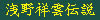

昔、漢ありけり！
その名を浅野祥雲といふ。
…当サイトを熱心にご覧の方なら既に其の尊名は三度の食事の前には必ず唱えている事であろう。
浅野祥雲師をご存じ無き貴兄においては尾張の偉大なるコンクリ人形師（※）と心にナイフでぐっさりと刻んでおいていただきたい。
この名を知らずとも生きてはいけるが、知らずに生きる事のいかに無味乾燥なことよ！
これまで当サイトにおいても以下のスポットにてその素晴らしすぎる作品群を紹介してきた
＃014 桃太郎神社
＃096 五色園
＃206 愛知大弘法巡り
この度浅野祥雲師没後30年を勝手に記念すべく浅野祥雲伝説と銘打ってシリーズ化する事にした。
＃273 浅野祥雲は我々に何を残したのか/愛知県
＃271 秋葉山円通寺/愛知県
＃270 犬山成田山/愛知県
＃268 番割観音十番/愛知県
＃267 姥子山立弘法/愛知県
＃266 岩崎御嶽山/愛知県
＃265 熱海城/静岡県
＃264 関ヶ原ウォーランド/岐阜県
今後浅野祥雲作品を紹介する際、当サイトにおいては以下のアイコンを付随させる。

コレを期に浅野祥雲ファンが増えれば幸いである。
※…説明するのもめんどくさいので一応、wikiの浅野祥雲の項目（一部誤記はあるけど）などに目を通してからご覧いただけると話が早くっていいです。
珍寺大道場 HOME